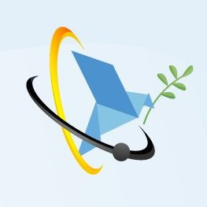
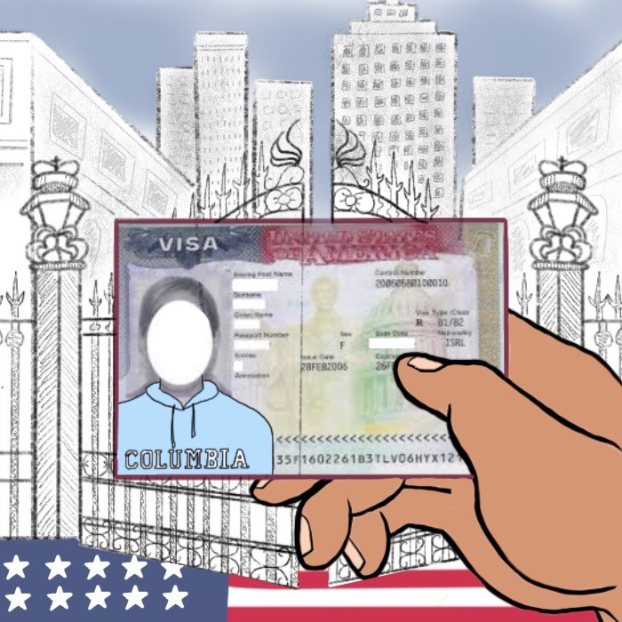

Next-Generation Fellowship
I am one of the four 2021 fellows of the Physicists Coalition's Next-Generation Fellowship, a program supported by the American Physical Society and the Princeton Science and Global Security Program to train early-career scientists in nuclear threat reduction policy. As part of the program, I am currently working under Dr. Zia Mian's guidance on a project about Brazilian Nuclear Policy and its relationship to the Treaty on the Prohibition of Nuclear Weapons, signed in 2017. Under this fellowship I will have access to training opportunities in policymaking, including lobbying initiatives, workshops and a summer school at Princeton, as well as receive a small seed funding to develop my project further after 2021.FELLOWSHIP WEBSITE APS NEWS (2021) APS NEWS (2022)
Lobbying against ICE removal of SEVP COVID-19 exemption
In July 2020, SEVP modified the exemption made for nonimmigrant students on F-1 and M-1 visas in March 2020 due to the COVID-19 pandemic. The July order would force students to take in-person classes during a pandemic solely to keep their legal visa status. The rule was rescinded on July 13, 2020, but the exemption made in March suggested that new students would not be allowed to come to the US if their university went online for the year. On top of several consequences to the livelihood of students, this directive disregarded the nature of Ph.D. programs, which are based on research and not classes. I led a group of STEM students from Columbia, Duke and UChicago to reach out to Congress the week the directive came out. We had online/phone meetings with House and Senate staff from NY, IL and NC to address potential actionable items for Congress and our concerns about the new directive's impact on students and science.UPDATED ONE-PAGER INITIAL ONE-PAGER

Spring 2020 NAGPS Legislative Action Days
Every semester, the National Association for Graduate-Professional Students (NAGPS) organizes a conference followed by lobbying days in DC. In March 2020, the in-person part of the conference was canceled due to COVID-19. However, we took our congressional meetings online and, along with a group of Columbia and Syracuse students, I met with House and Senate staff from NY, SC, IL and NC to address issues that affect grad students such as mental health, sexual harrassment and immigration. We focused on the effect of the F-1 visa renewal policy on students' lives, academia and science during the pandemic, advocating for domestic renewals. In 2018, NAGPS sent a letter to the State Department asking for domestic F-1 renewals, to which the State Department alleged having limited resources for such. You can read about it below. (Illustration from Columbia Spectator by Claire Easton.)VISA RENEWAL ONE-PAGER NAGPS LETTER STATE DEPARTMENT RESPONSE